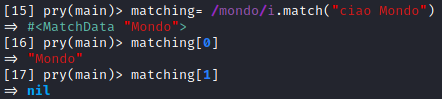

Match method
match is a method of the Regexp class (
https://ruby-doc.org/core-3.0.1/Regexp.html)
If we
have a Regexp object (e.g.: "mondo")and you invoke match method on a string(e.g.: "ciao
mondo!),
The match method will give us another object that describes the match, a
MatchData
object
Information that we can retrieve from a
MatchData object
◇ position of the
matched substring
◇ matched words
◇ ...
We can treat MatchData as an
array, where in each position there is a matching
substring
Syntax/pattern/.match("string")example:
matching= /mondo/i.match("ciao Mondo")
